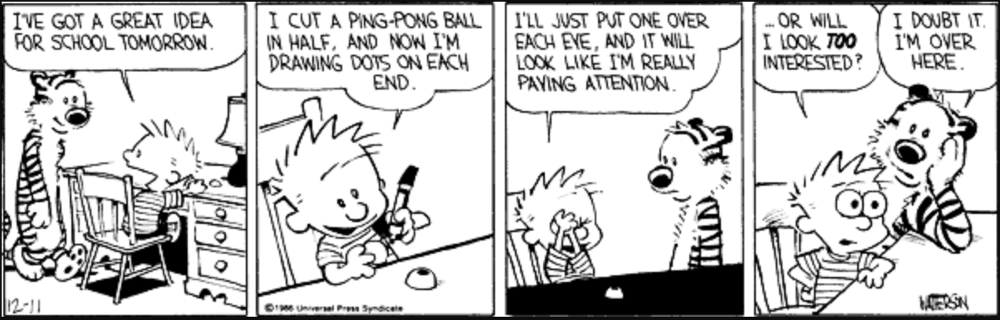
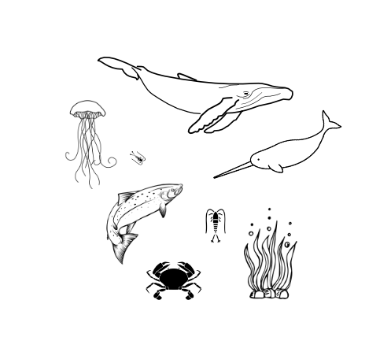
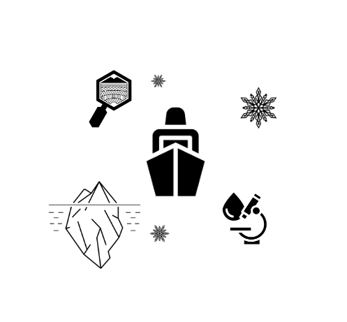
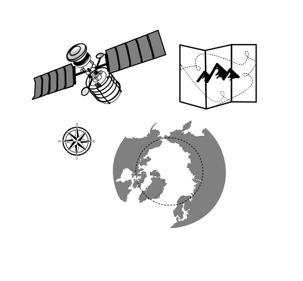
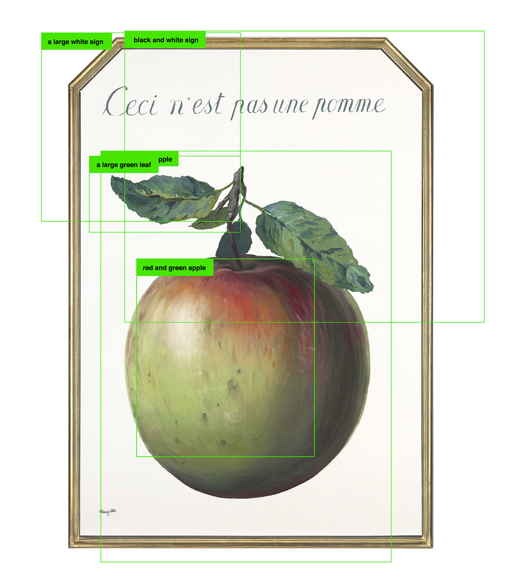

12 Data Ethics for Scalable Computing
12.1 Learning objectives
- Review FAIR and CARE Principles, and their relevance to data ethics
- Examine how ethical considerations are shared and considered at the Arctic Data Center
- Discuss ethical considerations in machine learning
12.2 Intro to Data Ethics

To recap, the Arctic Data Center is an openly-accessible data repository and the data published through the repository is open for anyone to reuse, subject to conditions of the license (at the Arctic Data Center, data is released under one of two licenses: CC-0 Public Domain and CC-By Attribution 4.0). In facilitating use of data resources, the data stewardship community has converged on principles surrounding best practices for open data management.
Two principles that the Arctic Data Center explicitly adopts are FAIR Principles (Findable, Accessible, Interoperable, and Reproducible) and CARE Principles for Indigenous Governance (Collective Benefit, Authority to Control, Responsibility, Ethics).
FAIR and CARE principles are relevant in the context of data ethics for multiple reasons. FAIR speaks to how metadata is managed, stored, and shared.

FAIR principles and open science are overlapping concepts, but are distinctive from one another. Open science supports a culture of sharing research outputs and data, and FAIR focuses on how to prepare the data. The FAIR principles place emphasis on machine readability, “distinct from peer initiatives that focus on the human scholar” (Wilkinson et al 2016) and as such, do not fully engage with sensitive data considerations and with Indigenous rights and interests (Research Data Alliance International Indigenous Data Sovereignty Interest Group, 2019). Metadata can be FAIR but not open. For example, sensitive data (data that contains personal information) may not be appropriate to share, however sharing the anonymized metadata that is easily understandable will reduce research redundancy.

Research has historically perpetuated colonialism and represented extractive practices, meaning that the research results were not mutually beneficial. These issues also related to how data was owned, shared, and used. To address issues like these, the Global Indigenous Data Alliance (GIDA) introduced CARE Principles for Indigenous Data Governance to support Indigenous data sovereignty. CARE Principles speak directly to how the data is stored and shared in the context of Indigenous data sovereignty. CARE Principles stand for:
Collective Benefit - Data ecosystems shall be designed and function in ways that enable Indigenous Peoples to derive benefit from the data
Authority to Control - Indigenous Peoples’ rights and interests in Indigenous data must be recognized and their authority to control such data be empowered. Indigenous data governance enables Indigenous Peoples and governing bodies to determine how Indigenous Peoples, as well as Indigenous lands, territories, resources, knowledges and geographical indicators, are represented and identified within data.
Responsibility - Those working with Indigenous data have a responsibility to share how those data are used to support Indigenous Peoples’ self-determination and collective benefit. Accountability requires meaningful and openly available evidence of these efforts and the benefits accruing to Indigenous Peoples.
Ethics - Indigenous Peoples’ rights and wellbeing should be the primary concern at all stages of the data life cycle and across the data ecosystem. To many, the FAIR and CARE principles are viewed by many as complementary: CARE aligns with FAIR by outlining guidelines for publishing data that contributes to open-science and at the same time, accounts for Indigenous’ Peoples rights and interests.
12.3 Ethics at the Arctic Data Center
Transparency in data ethics is a vital part of open science. Regardless of discipline, various ethical concerns are always present, including professional ethics such as plagiarism, false authorship, or falsification of data, to ethics regarding the handling of animals, to concerns relevant to human subjects research. As the primary repository for the Arctic program of the National Science Foundation, the Arctic Data Center accepts Arctic data from all disciplines. Recently, a new submission feature was released which asks researchers to describe the ethical considerations that are apparent in their research. This question is asked to all researchers, regardless of disciplines.
Sharing ethical practices openly, similar in the way that data is shared, enables deeper discussion about data management practices, data reuse, sensitivity, sovereignty and other considerations. Further, such transparency promotes awareness and adoption of ethical practices.
Inspired by CARE Principles for Indigenous Data Governance (Collective Benefit, Authority to Control, Responsibility, Ethics) and FAIR Principles (Findable, Accessible, Interoperable, Reproducible), we include a space in the data submission process for researchers to describe their ethical research practices. These statements are published with each dataset, and the purpose of these statements is to promote greater transparency in data collection and to guide other researchers. For more information about the ethical research practices statement, check out this blog.
To help guide researchers as they write their ethical research statements, we have listed the following ethical considerations that are available on our website. The concerns are organized first by concerns that should be addressed by all researchers, and then by discipline.
Consider the following ethical considerations that are relevant for your field of research.
12.3.1 Ethical Considerations for all Arctic Researchers
Research Planning
- Were any permits required for your research?
- Was there a code of conduct for the research team decided upon prior to beginning data collection?
- Was institutional or local permission required for sampling?
- What impact will your research have on local communities or nearby communities (meaning the nearest community within a 100 mile radius)?
Data Collection
- Were any local community members involved at any point of the research process, including study site identification, sampling, camp setup, consultation or synthesis?
- Were the sample sites near or on Indigenous land or communities?
Data Sharing and Publication
- How were the following concerns accounted for: misrepresentation of results, misrepresentation of experience, plagiarism, improper authorship, or the falsification or data?
- If this data is intended for publication, are authorship expectations clear for everyone involved? Other professional ethics can be found here
12.3.2 Archaeological and Paleontological Research

Research Planning
- Were there any cultural practices relevant to the study site? If yes, how were these practices accounted for by the research methodologies.
Data Collection
- Did your research include the removal or artifacts?
- Were there any contingencies made for the excavation and return of samples after cleaning, processing, and analysis?
Data Sharing and Publication 4. Were the samples deposited to a physical repository? 5. Were there any steps taken to account for looting threats? Please explain why or why not?
12.3.3 Human Participation and Sensitive Data

Research Planning
- Please describe the institutional IRB approval that was required for this research.
- Was any knowledge provided by community members?
Data Collection 3. Did participants receive compensation for their participation? 4. Were decolonization methods used?
Data Sharing and Publication
- Have you shared this data with the community or participants involved?
12.3.4 Marines Sciences (e.g. Marine Biology Research)

Research Planning
- Were any of the study sites or species under federal or local protection?
Data Collection
- Were endangered, threatened, or otherwise special-status species collected?
- How were samples collected? Please describe any handling practices used to collect data.
- What safety measures were in place to keep researchers, research assistants, technicians, etc., out of harms way during research?
- How were animal care procedures evaluated, and do they follow community norms for organismal care?
Data Sharing and Publication 6. Did the species or study area represent any cultural importance to local communities, or include culturally sensitive information? Please explain how you came to this conclusion and how any cultural sensitivity was accounted for.
12.3.5 Physical Sciences (e.g. Geology, Glaciology, and Ice Research)

Research Planning 1. Was any knowledge provided by community members, including information regarding the study site?
Data Collection
- What safety measures were in place to keep researchers, research assistants, technicians, etc., out of harms way during research?
- Were there any impacts to the environment/habitat before, during or after data collection?
Data Sharing and Publication
- Is there any sensitive information including information on sensitive sites, valuable samples, or culturally sensitive information?
12.3.6 Plant and Soil Research

Research Planning
- Were any of the study sites protected under local or federal regulation?
- Was any knowledge provided by nearby community members, including information regarding the study site?
Data Collection
- Did sample collection result in erosion of soil or other physical damage? If so, how was this addressed?
- What safety measures were in place to keep researchers, research assistants, technicians, etc., out of harms way during research?
Data Sharing and Publication
- Do any of the study sites or specimens represent culturally sensitive areas or species? Please explain how you came to this conclusion, and if yes, how was this accounted for?
12.3.7 Spatial Data

Research Planning
- Were any land permits required for this research?
Data Collection
- Were any data collected using citizen science or community participation?
- If yes, were community members compensated for their time and made aware of their data being used and for what purpose?
Data Sharing and Publication
- If data were ground-truthed, was institutional or local permissions required and/or obtained for land/property access?
- Have you shared this data with the community or participants involved?
- If location sensitive data was obtained (endangered/threatened flora & fauna location, archaeological and historical sites, identifiable ships, sensitive spatial information), how were the data desensitized?
12.3.8 Wildlife Sciences (e.g. Ecology and Biology Research)

Research Planning
- Were any permits required for data sampling?
Data Collection
- Were endangered, threatened, or otherwise special-status plants or animal species collected?
- How were samples collected? Please describe any handling practices used to collect data.
- What safety measures were in place to keep researchers, research assistants, technicians, etc., out of harms way during research?
- How were animal care procedures evaluated, and do they follow community norms for organism care?
Data Sharing and Publication
- Do any of the study sites or specimens represent culturally sensitive areas or species? Please explain how you came to this conclusion, and if yes, how was this accounted for?
Menti question:
- Have you thought about any of the ethical considerations listed above before?
- Were any of the considerations new or surprising?
- Are there any for your relevant discipline that are missing?
12.4 Ethics in Machine Learning
Menti poll
- What is your level of familiarity with machine learning
- Have you thought about ethics in machine learning prior to this lesson?
- Can anyone list potential ethical considerations in machine learning?
What comes to mind when considering ethics in machine learning?
The stories that hit the news are often of privacy breaches or biases seeping into the training data. Bias can enter at any point of the research project, from preparing the training data, designing the algorithms, to collecting and interpreting the data. When working with sensitive data, a question to also consider is how to deanonymize, anonymized data. A unique aspect to machine learning is how personal bias can influence the analysis and outcomes. A great example of this is the case of ImageNet.
12.4.1 ImageNet: A case study of ethics and bias in machine learning
 Image source: Kate Crawford and Trevor Paglen, “Excavating AI: The Politics of Training Sets for Machine Learning” (September 19, 2019).
ImageNet is a great example of how personal bias can enter machine learning through the training data. ImageNet was a training data set of photos that was used to train image classifiers. The data set was initially created as a large collection of pictures, which were mainly used to identify objects, but some included images of people. The creators of the data set created labels to categorize the images, and through crowdsourcing, people from the internet labeled these images. (This example is from Kate Crawford and Trevor Paglen, “Excavating AI: The Politics of Training Sets for Machine Learning”, September 19, 2019).
12.4.1.1 Discussion:
- Where are the two areas bias could enter this scenario?
- Are there any ways that this bias could be avoided?
- While this example is specific to images, can you think of any room for bias in your research?
12.5 References and Further Reading
Carroll, S.R., Herczog, E., Hudson, M. et al. (2021) Operationalizing the CARE and FAIR Principles for Indigenous data futures. Sci Data 8, 108 https://doi.org/10.1038/s41597-021-00892-0
Chen, W., & Quan-Haase, A. (2020) Big Data Ethics and Politics: Towards New Understandings. Social Science Computer Review. https://journals.sagepub.com/doi/10.1177/0894439318810734
Crawford, K., & Paglen, T. (2019) Excavating AI: The Politics of Training Sets for Machine Learning. https://excavating.ai/
Gray, J., & Witt, A. (2021) A feminist data ethics of care framework for machine learning: The what, why, who and how. First Monday, 26(12), Article number: 11833
Puebla, I., & Lowenberg, D. (2021) Recommendations for the Handling for Ethical Concerns Relating to the Publication of Research Data. FORCE 11. https://force11.org/post/recommendations-for-the-handling-of-ethical-concerns-relating-to-the-publication-of-research-data/
Research Data Alliance International Indigenous Data Sovereignty Interest Group. (2019). “CARE Principles for Indigenous Data Governance.” The Global Indigenous Data Alliance. GIDA-global.org
Wilkinson, M., Dumontier, M., Aalbersberg, I. et al. (2016) The FAIR Guiding Principles for scientific data management and stewardship. Sci Data 3, 160018. https://doi.org/10.1038/sdata.2016.18
Zwitter, A., Big Data ethics. (2014) Big Data and Society. DOI: 10.1177/2053951714559253